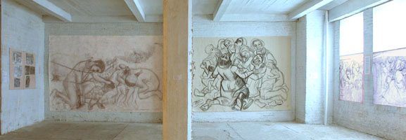
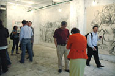

| Introduction |
| The Massacre |
| Northern Fields |
| Inside the Village |
| First Wave |
| Second Wave |
| Third Wave |
| Fourth Wave |
| Sixth |
| Seventh |
| Ninth |
| Roster of Victims |
| Witnesses |
| Artist's Notes |
| Contact me |
| ="pointer-events:none;cursor:default;" href="http://www.art.net/samia">Exit |
MEMORIAL on the 50th Anniversary of the Kafr Qasem Massacre


Fifty years ago, on October 29, 1956, 49 Palestinian residents of Kafr Qasem were murdered by
Israeli border police who at that time were officially attached to the military. Countless more
were wounded and left bleeding and unattended. Their families were unable to offer aid because
of a 24 hour curfew lasting for some two days and three nights. Violation of the curfew was
punishable by death. In the following two days (while the families were thus imprisoned in
their homes) the Israelis unceremoniously buried the victims without permission, or the
presence of witnesses. On the following morning, the unattended wounded who had helplessly lain
in the streets were torn away from their deceased loved ones, thrown into trucks (not ambulances)
and hauled off to hospitals. This deliberate massacre had been planned in advance to coincide
with the Israeli and Anglo-French attack on the Suez canal.

The Memorial was part of an exhibition titled Three Arab Painters in New York curated
by writer and historian Maymanah Farhat. The exhibition took place in New York at The Bridge
gallery during the month of June 2006.

I have feelings of great love for Kafr Qasem and its heroic residents. They bring tears to my
eyes when I contemplate their tragic story. These recent events taught me a lot about
Sumoud (persistence). In 1948, Kafr Qasem had eighteen thousand dunums
(a land measure). Amazingly as much as thirteen thousand still remain. Perhaps, this is
because the Israeli government does not wish to call attention to this brutal massacre.
Most other Palestinian Arab villages and towns have very little left of their traditional
lands as the process of Israeli confiscation continues unabated. In 1956, Kafr Qasem was a
village of approximately 1500 residents, now Kafr Qasem has become a town of over 15,000. In
Kafr Qasem, 60% of residents once lived off of their land; now 80% are exploited workers.
Additionally Israeli taxation without a proportional return of social services, adds to the
difficulties Kafr Qasem residents. Civil equality is a dream. There is no level of life where
Israeli policy does not dictate limitations intended to reduce Palestinian Arabs to poverty or
promote immigration. A mandatory and unfair educational curriculum, implemented by the Israeli
government, reduces children�s pride and promotes ignorance. Additionally, Israeli taxation
without a proportional return of social services, adds to the difficulties of Kafr Qasem
residents.
It�s the essence of Sumoud that Kafr Qasem resists, Palestine resists, Iraq resists,
and Lebanon resists

Guests to the exhibition were supportive and spent
many hours reading the text or silently contemplating the roster of victims.


The townspeople of Kafr Qasem organize an annual memorial event on 29 the of October which
begins with speeches by the town elders followed by a march through the town to additional
ceremonies at the martyr's cemetery. Later in the day an open house for the arts is organized
at the town council headquarters. Poets, writers, and artists are invited to contribute to
these events thereby aiding the process of healing. I attended such an event in 1999. I began
interviewing survivors and continued the work in subsequent visits. My primary goal was to
make a series of documentary drawings. These drawings fill the pages of this web treatise.
Some documentary photographs from Kafr Qasem publications are also included.
![[Art on the Net]](/images/artnet_button.gif)